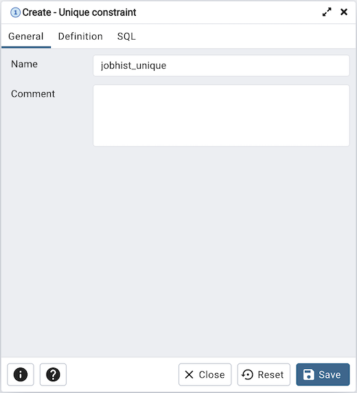
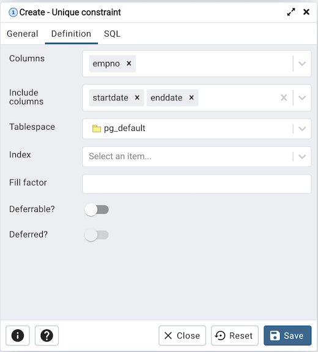
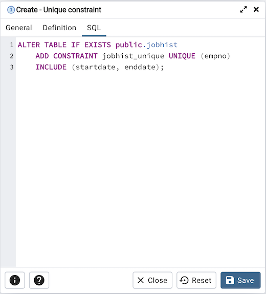

Unique Constraint Dialog¶
Use the Unique constraint dialog to define a unique constraint for a specified table. Unique constraints ensure that the data contained in a column, or a group of columns, is unique among all the rows in the table.
The Unique constraint dialog organizes the development of a unique constraint through the following dialog tabs: General and Definition. The SQL tab displays the SQL code generated by dialog selections.
Use the fields in the General tab to identify the unique constraint:
Use the Name field to add a descriptive name for the unique constraint. The name will be displayed in the pgAdmin tree control.
Click the Definition tab to continue.
Use the fields in the Definition tab to define the unique constraint:
Click inside the Columns field and select one or more column names from the drop-down listbox. To delete a selection, click the x to the left of the column name. The unique constraint should be different from the primary key constraint defined for the same table; the selected column(s) for the constraints must be distinct.
Use Include columns field to specify columns for INCLUDE clause of the constraint. This option is available in Postgres 11 and later.
Select the name of the tablespace in which the unique constraint will reside from the drop-down listbox in the Tablespace field.
Select the name of an index from the drop-down listbox in the Index field. This field is optional. Adding a unique constraint will automatically create a unique B-tree index on the column or group of columns listed in the constraint, and will force the column(s) to be marked NOT NULL.
Use the Fill Factor field to specify a fill factor for the table and index. The fill factor for a table is a percentage between 10 and 100. 100 (complete packing) is the default.
Move the Deferrable? switch to the Yes position to specify the timing of the constraint is deferrable and can be postponed until the end of the statement. The default is No.
If enabled, move the Deferred? switch to the Yes position to specify the timing of the constraint is deferred to the end of the statement. The default is No.
Click the SQL tab to continue.
Your entries in the Unique constraint dialog generate a SQL command (see an example below). Use the SQL tab for review; revisit or switch tabs to make any changes to the SQL command.
Example¶
The following is an example of the sql command generated by user selections in the Unique constraint dialog:
The example shown demonstrates creating a unique constraint named jobhist_unique on the empno column of the jobhist table.
Click the Info button (i) to access online help.
Click the Save button to save work.
Click the Close button to exit without saving work.
Click the Reset button to restore configuration parameters.